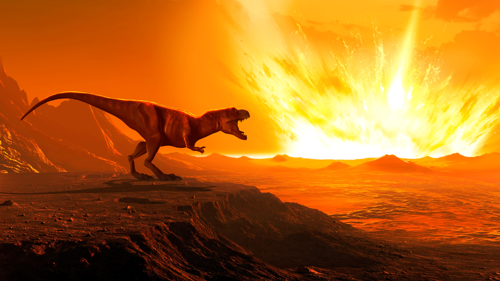
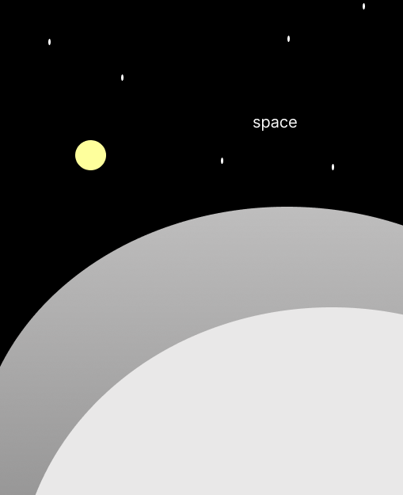
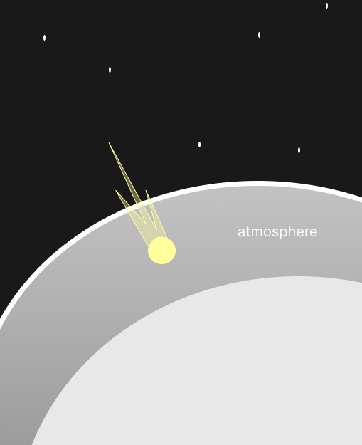
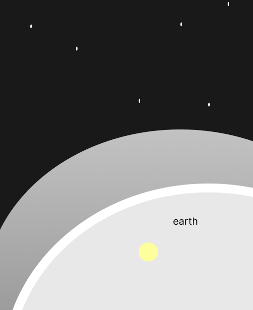

scroll
Most of us grew up learning about the legendary impactor that wiped out the dinosaurs.Etched in our minds as a colossal, world-ending boulder crashing down in fire. For a long time, that single apocalyptic image defined what the word 'meteorite' meant to me.If someone were to ask me how big I think a meteorite is, I probably wouldn't have an answer. But how big are space rocks actually? If you assume they are all massive mountain-sized catastrophes, your mental scale is probably as skewed as mine is.
This data narrative explores the true mass distribution of meteorites, and why the reality of space debris is much smaller and stranger than we think.
Before we dive into the data, let's back up. What actually is a meteorite?




Meteoroid. Out in space, it's called a meteoroid — a chunk of rock or metal drifting through the solar system, sometimes for billions of years.
Meteor. The moment it hits Earth's atmosphere, it becomes a meteor — what you'd call a shooting star. Most burn up completely and never reach the ground.
Meteorite. If any part survives the fall and lands, that surviving piece is a meteorite. This story is about the survivors.
So that's what a meteorite is. But here's the thing, before I ever looked at real data, I already had a picture in my head of what one looks like.
Picture a meteorite in your head right now. Not any specific one — just your gut image of one. How heavy is it?
Drag to make a guess: —
Let's see how that compares to what's actually out there.
Here's what's really in the record.
Number of meteorites
Mass (grams, log scale)
Your guess was —
—
Most entries in this record aren't chance discoveries. They're the result of deliberate searches — trained teams combing deserts and ice fields, looking specifically for anything that doesn't belong. That kind of search finds the small stuff. A person just glancing at the sky never will.
So — is that what most meteorites actually look like? Not even close.
Number of meteorites
Mass (grams, log scale)
—% of recorded meteorites are lighter than a brick.
Click the leftmost bar to see the smallest meteorite ever recorded.
LaPaz Icefield 04531
0.01 g — the lightest meteorite ever recorded.
Most are closer to a coin than a boulder.
But some really are as big as I imagined.
Hoba, the heaviest meteorite ever recorded, weighs about — times the median meteorite in this dataset.
See for yourself. Every meteorite ever recorded is on the map below.